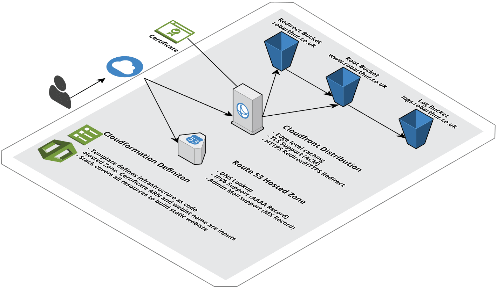

Deploying a Static Webiste Using Cloudformation
Posted on Mon 18 September 2017 in Dev • 2 min read
Overview
This first post covers the hosting and deployment for this website. robarthur.co.uk is deployed as a static website to Amazon Simple Storage Solution (S3). S3 is a great solution for deploying static content, as all of the work to handled by Amazon. The infrastructure to host the website itself is defined as code and deployed using AWS Cloudformation.
Architecture
The setup is mostly as defined in the AWS S3 docuemntation for hosting a static website with a custom domain

Key services utilised are:
- S3 - For hosting and serving static content. The three buckets hold 1) The static website content, 2) Manage redirects from the 'naked' domain to the 'www' domain, 3) Hold HTTP acces logs for the site
- Cloudfront - A CDN for handling globally distributed content, including edge level caching.
- Route53 - DNS provider for the website.
- Certificate Manager - Provision and manage SSL certificates
- Cloudformation - A template defines all of the above infrastructure as code. Cloudformation provisions the infrastructure as defined in the template.
Infrastructure as Code
A Cloudformation template defines all of the website infrastructure as code. The template used to build the hosting infrastructure is defined here:
https://github.com/robarthur/robarthur.co.uk/blob/master/cloudformation/s3-static-website.yml
Credit to Sergej Jevsejev, for the basis of this template.
Infrastructure Deployment
The cloudformation template can be deployed from the AWS Console or via the command line.
We need to pass a number of parameters to this Cloudformation stack, these are the domain name of a valid Route53 hosted domain, and the Amazon Resource Name (ARN) of a SSL certificate.
Assuming you have these and AWS credentials credentials configured with appropriate IAM priviliges, you could deploy this blog from the command line using the following command:
git clone https://github.com/robarthur/robarthur.co.uk.git
cd robarthur.co.uk
aws cloudformtaion create-stack --stack-name s3-static-website \
--template-body file://cloudformation/s3-static-website.yml
--parameters ParameterKey=DomainName,ParameterValue=mywebsite.com ParameterKey=FullDomainName, \
ParameterValue=www.mywebsite.com ParameterKey=AcmCertificateArn, \
ParameterValue=arn:aws:acm:us-east-1:1234567890:certificate/xxxxxxxx-xxxx-xxxx-xxxx-xxxxxxxxxxxx
Future Enhancements
This is a good start but how could it be improved?
- Origin Access Identity - We could use an origin access identity to restrict direct access to the S3 bucket that hosts the webiste.
- Additional Logging - As well as HTTP access logs to the S3 buckets, we can configure Cloudfront access logs.
- Continuous Integration - A future post will cover leveraging AWS Code Build/Code Deploy to deploy content from a static site generator to S3 on update.